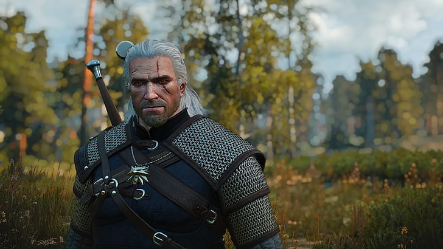
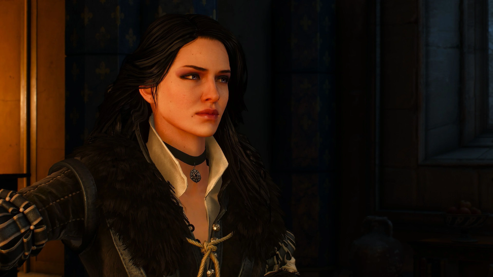
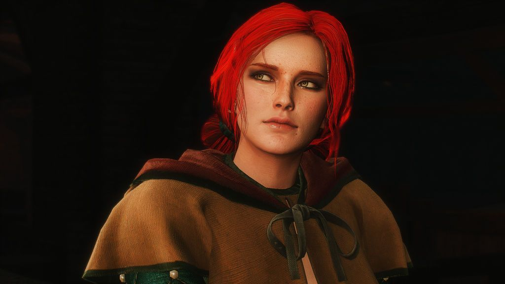
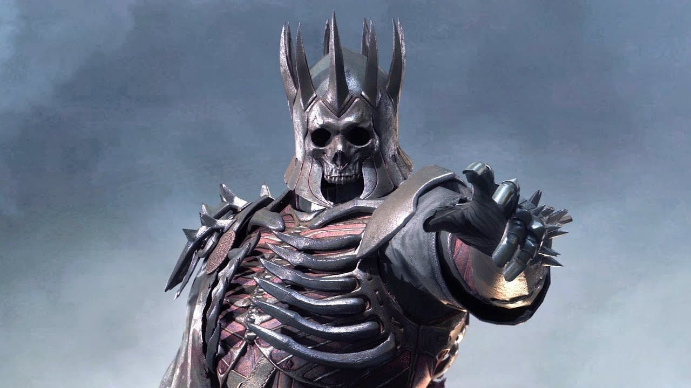
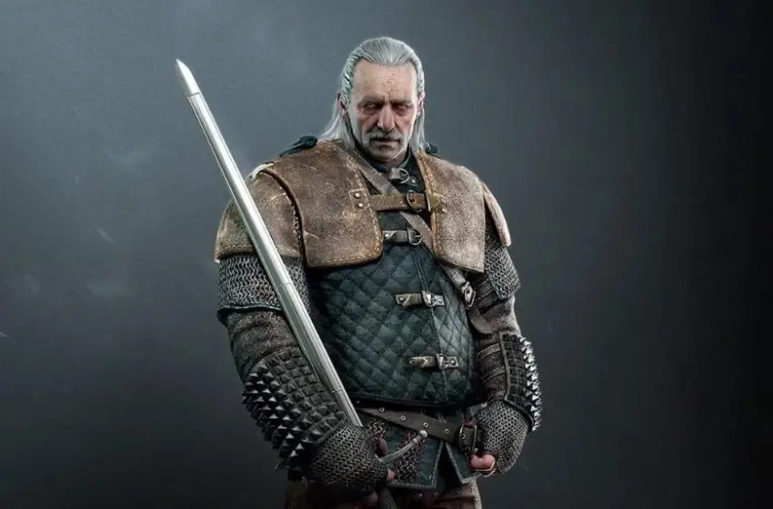

Hlavní postav
Geralt

Geralt z Rivie, zvaný Řezník z Blavikenu či Bílý vlk, byl dítětem vědmy. Jeho otec byl zachráněn zaklínačem a ten po něm chtěl odměnu v podobě Zákonu překvapení, a tak byl jako dítě odveden na zaklínačský hrad Kaer Morhen, kde byl podroben dvěma základním zkouškám: Zkoušce trav a Cestě meče
Ciri

Ciri, celým jménem Cirilla Fiona Elen Riannon, lvíče ze Cintry, dcera princezny Pavetty ze Cintry a Dunnyho z Maechtu. Jejími předky jsou elfka Lara Dorren aep Siadhal a lidský mág Cregennan z Lód. Je sudbou spojena s Geraltem. Během jedné pracovní návštěvy v Cintře u královny Calanthé Geralt zachránil život rytíři Ježkovi a jeho budoucí ženě, princezně Pavettě.
Yennefer

je mocná čarodějka, Geraltova milenka a Trissina blízká přítelkyně. Na jeho vlastní přání, které vyslovil jako své poslední při souboji s Džinem, je s Geraltem svázána zvláštním poutem. Sama děti jako většina čarodějek mít nemohla, i když po nich stále toužila a hledala všemožné prostředky, kterými by mateřství dosáhla. Vychovávala Ciri a učila ji magii.
Triss

(v polském originále Triss Merigold) je čarodějka, přítelkyně Geralta a Yennefer a členka Lóže čarodějek (tajná organizace mocných čarodějů kontinentu).
Marigold

(v polském originále Jaskier, čili „pryskyřník“, v angličtině Dandelion, tedy „pampeliška“) je známý trubadúr, Geraltův přítel a milovník alkoholické i sexuální zábavy.
Vedlejší postavy
Crach an Craite

Crach an Craite, nebo také Tirth ys Muire ("Mořský kanec") nebo "Kňour z moře", je synovcem krále Brana ze Skellige a Eista Tuirseacha.
Je popsán jako ramenatý, s ryšavou čupřinou na hlavě a zřídkakdy zachovávající klid. Má také zdravou chuť k jídlu.
Zoltan

trpasličí žoldnéř, dobro koná v případě, že něj něco má i on. Vlastní mluvícího papouška Feldmaršála Dudu majícího omezenou slovní zásobou, znalou výhradně vulgarismy.
Po dobu války s Nilfgaardem zkřížil cesty s Geraltem a jeho družinou putující na Jih. Při loučení věnoval Geraltovi svůj legendární meč Sihill.
Bojoval v bitvě u Brenny, později se rozhodl usadit a oženit se.
Eredin

byl elf z Aen Elle a velitel elfské jízdy známé jako Divoký hon. Jako její vůdce byl většinou znám jako Král Divokého honu. Eredin byl vysokým generálem ve svém světě, dokud nezabil krále a nestal se jeho nástupcem.
Imlerith

Imlerith je prvním důstojníkem a pravou rukou Eredina, Krále Divokého honu. Stejně jako všichni členové Honu, je i on Aen Elle, tedy elfem z jiného světa, toužící po válce a krveprolití. Má těžkou černou zbroj, která zakrývá celé tělo, materiál je však neznámý.
Emhyr

Jeden z nejmocnějších vládců 13. století získal za svůj život mnoho jmen, největší slávy se mu však dostalo jako císaři Nilfgaardu pod pravým jménem, Emhyr var Emreis. Bílý plamen, jak se mu také mezi lidmi říkalo, proslul především vládou pevnou rukou.
Vesemir

Vesemir je nejstarší zaklínač ze Školy vlka a možná nejstarší zaklínač vůbec. Jako jeden z mála a nejstarší z těch, kteří přežili útok lůzy na hrad Kaer Morhen, se stal po tomto útoku velmistrem školy. Předtím býval učitelem šermu. Vychoval poslední generaci několika málo zaklínačů, a byl pro ně něco jako otec.